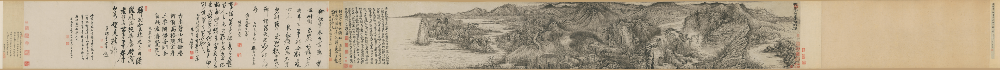

空间意境 · 山川神遇 / 三辩
石涛：自然经验怎样转化为艺术空间？

“山川与予神遇而迹化也。”《画语录·山川章第八》
游历、观察与感受，使画家与山川建立精神联系；艺术创作再将这种体验转化为画面形象。
《搜尽奇峰图》将长期自然观察与个人笔墨结合，说明画中山川也承载主体对自然的感知和理解。
山川神遇把人与自然的精神联系，转化为画面表达。
空间意境 · 山川神遇 / 三辩

“山川与予神遇而迹化也。”《画语录·山川章第八》
游历、观察与感受，使画家与山川建立精神联系；艺术创作再将这种体验转化为画面形象。
《搜尽奇峰图》将长期自然观察与个人笔墨结合，说明画中山川也承载主体对自然的感知和理解。